Lesson 05 - Supervised Machine Learning - Artificial Neural Networks#
Summary#
Perceptrons#
“Classifiers such as the one resulting in the orange line, that compute a linear combination of the input features and return the sign of the response, where the line is given by { x : b0 + b1x1 + b2x2 = 0 }.” Rosenblatt (1958)
“The perceptron uses a vector of real input values, computes a linear combination of those, and generates a value of 1 (if above a certain threshold) or -1 (otherwise).” Mitchell (1997)
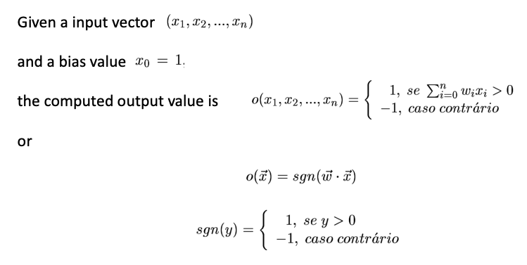
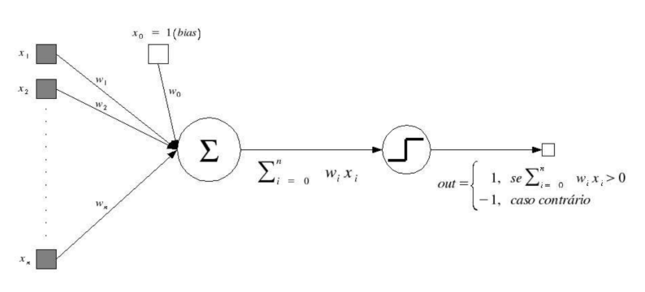
“The perceptron can be used to represent any primitive Boolean function AND, OR, ~AND and ~OR. This ability is extremely important given that all Boolean functions can be represented using these primitives. Moreover, every Boolean function can be represented with a network of perceptrons with at most two levels.” Mitchell (1997)
“The perceptron learning mechanism looks to choose the weight values w_0, w_1, …, w_n so that the output value (o = +- 1) is correct for each given instance (x_1, x_2, …, x_n)” Mitchell (1997)
“The perceptron learning algorithm tries to find a separating hyperplane by minimizing the distance of misclassified points to the decision boundary.” Rosenblatt (1958)
Start with an admissible weight vector (e.g. random) and iteratively apply the perceptron to the examples, modifying the weights every time an example is misclassified. At each iteration the weights are updated using the perceptron training rule 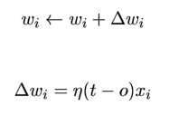
The learning rate is usually a very low value and is many times decreased over the iterations.
It can be proved that this learning process converges in a finite number of iterations, with perfect classification of examples, as long as they are linearly separable. Mitchell (1997)
If the classes are linearly separable, it can be shown that the algorithm converges to a separating hyperplane in a finite number of steps. However…
Problems:
When the data are separable, there are many solutions, and which one is found depends on the starting values.
The “finite” number of steps can be very large.
When the data are not separable, the algorithm will not converge, and cycles develop; the cycles can be long and therefore hard to detect.
Perceptron Learning (Δ Rule)
What if examples are not linearly separable? Algorithm should converge to the best approximation of the concept described by the examples.
In order to do so, the delta rule uses gradient descent which is the basis of the Backpropagation algorithm used in networks with several units combined.
The goal is to minimize the error of misclassified data points, which is proportional to the distance of the misclassified points to the decision boundary.
The algorithm in fact uses stochastic gradient descent to minimize error.
That is, instead of computing the sum of the (error-based) gradient contributions of each observation followed by a step in the negative gradient direction, a step is taken after each observation is visited.
Hence the misclassified observations are visited in some sequence, and the parameters are updated via a multiplicative learning rate.
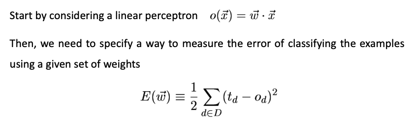
Given the linear perceptron and quadratic error function, the error surface of possible weight hypotheses will always be a paraboloid with a single local minimum
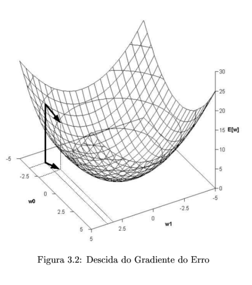
At each iteration, the weight vector is updated in the direction of the negative gradient, until the minimum is reached. This is done by computing the first derivative according to each component of the weight vector, that is, the gradient of E is 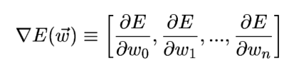 This vector gives the direction that maximizes the gradient, so we want 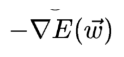 to maximize the gradient descent
Start with an admissible weight vector (e.g. random) and iteratively apply the perceptron to the all the examples, modifying the weights at each new iteration of the entire data set. At each iteration the weights are updated using the delta training rule 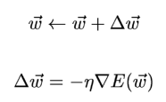 The learning rate is usually a very low value and is many times decreased over the iterations.
If we write the equation according to each component it becomes clear that the gradient is maximized when each component is changed proportionally to the partial derivative for that component. At each iteration each weight is updated using the delta training rule 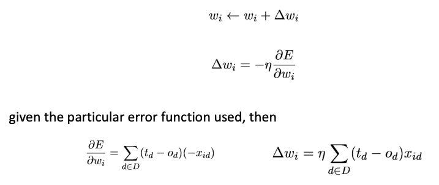
Multi Layered Networks#
Each neuron includes a non-linear activation function, although fully differentiable across the entire domain of the function, instead of the one used in the perceptron.
The use of a logistic function is biology-motivated given that it tries to take into account the refractory phase of real neurons.
The network includes one or more layers of hidden neurons, highly connected, that are neither input nor output.
These will allow the model to learning more complex tasks, expanding the search space and dimensions.
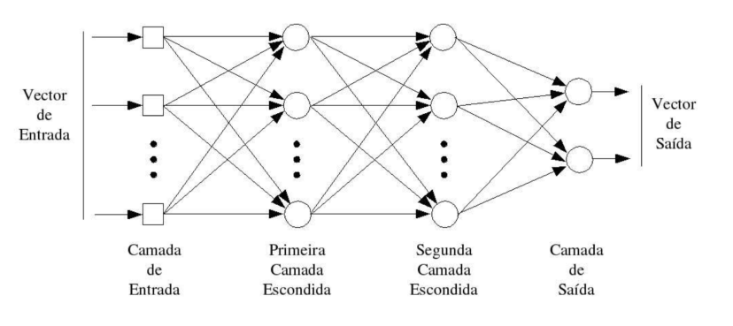
Activation Functions Each neuron receiving input from N neurons in the previous layer will output a transformation of 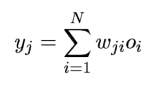
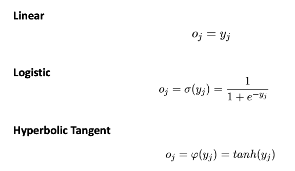
Gradient Descent
Each weight will be updated easily since the derivative of these functions is expressed as a function of its output: 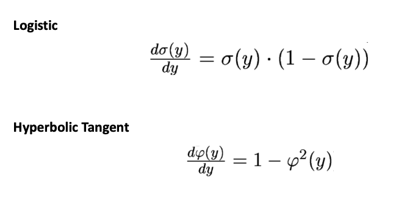
Backpropagation
Since we must consider multiple exit values, we must redefine the error function as the sum of all errors in output neurons: 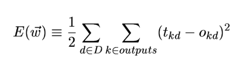
The problem is that the compound error surface will now have multiple local minima, not necessarily the global minimum. Changes to the gradient descent are needed…
Momentum
To avoid being stuck in local minima, we add a momentum term which tries to maintain the direction from previous update: 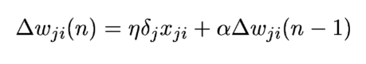
Increasing the speed of adaptation in horizontal areas of the error surface, while preventing strict changes in direction. Mitchell (1997)
“However, the presence of distributed non-linearity and high connectivity disable a sound theoretical interpretation of the model. Also, the use of hidden neurons prevents a good visualization of the learning process.” Haykin (1999)
Artificial Neural Networks#
Learning methods based on artificial neural networks are suitable for problems:
Instances are represented by many attribute-value pairs
The target function may be discrete-valued, real-valued, or a vector of real- or discrete-valued attributes
The training examples may contain errors
Long training times are acceptable
Fast evaluation of the learned target function may be required
The ability of humans to understand the learned target function is not important
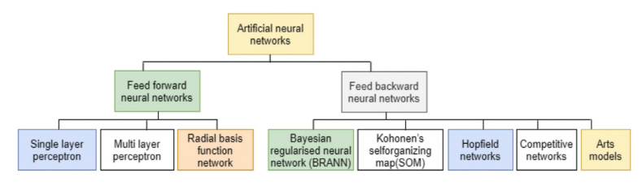
Feed-Forward Neural Networks
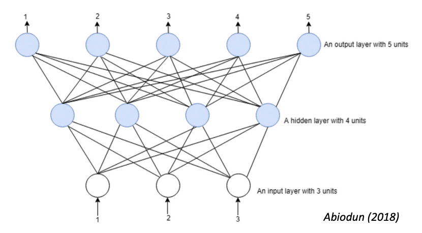
Feed-Backward Neural Networks
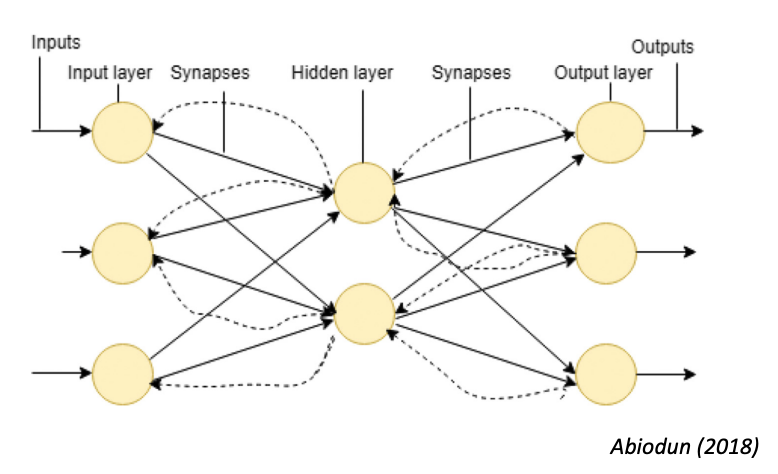
Deep Learning#
“The term deep learning refers to artificial neural networks with complex multilayers.” Albawi (2017)
To express complex models, deep learning has:
more neurons,
more complex ways of connecting layers,
more computing power to train,
automatic feature extraction. Deep learning methods have been found to be fitting for big data study with remarkable success in speech recognition, computer vision, pattern recognition, recommendation systems, and natural language processing. Nowadays, the innovation of DL in image identification, object detection, image classification, and face identification tasks have great success. One of the most common deep neural network is the convolutional neural network (CNN). Liu (2017)
The major concept of deep learning is learning data representations by increasing the quality of handling the ideas rather than events levels. Mostly in all levels, a significant amount of quality ideas or abstraction representation at a advance level are known through definition regarding fewer quality ideas or non-representations at the basic levels. This type of stages of learning, growth or hierarchical process of learning is superb because it can enable a system to fathom complex or multi-complex presentations accurately from raw data. This superb characteristic is making deep learning applicable to different fields Abiodun (2018)